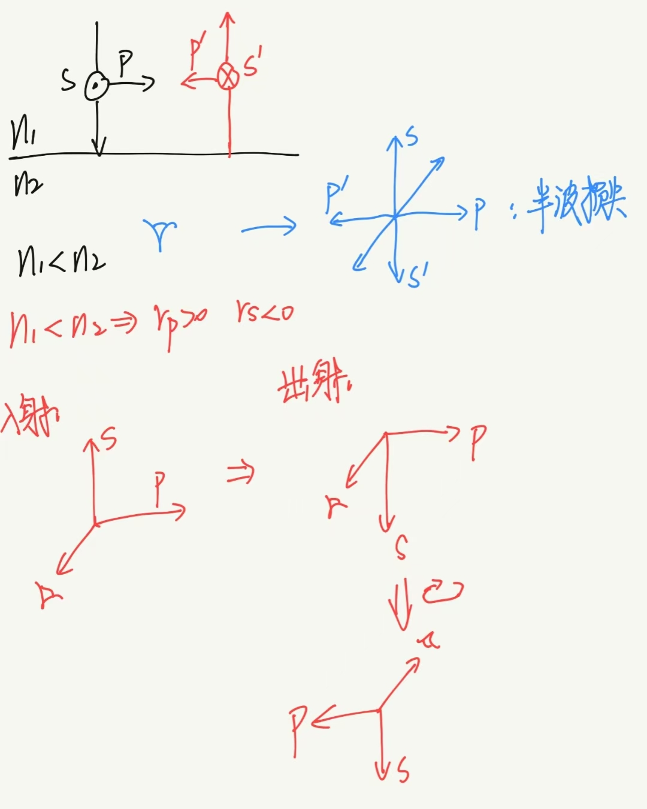
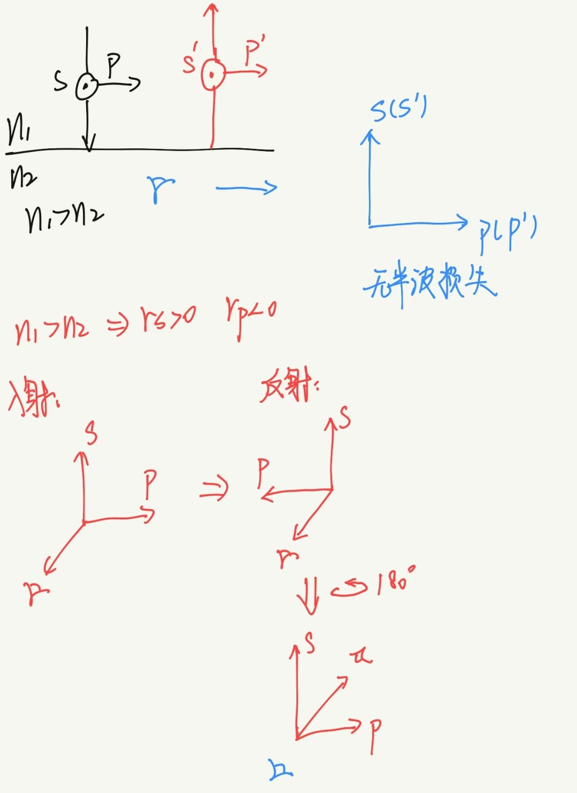
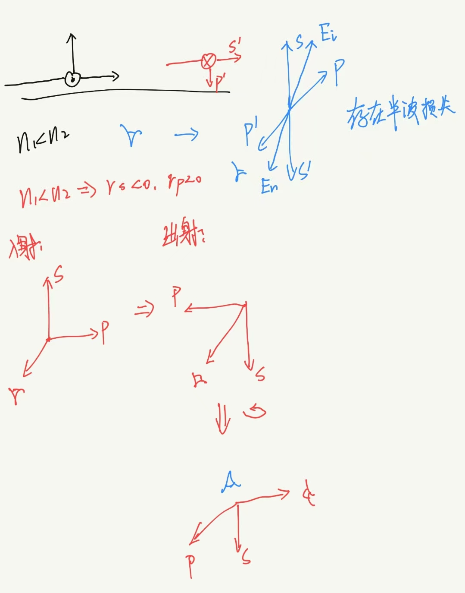

入射角\(\theta_1 = 0\).
略入射入射角\(\theta_1 \rightarrow 90°\).
在没有传导电流和自由电荷的介质中，磁感强度\(\mathbf{B}\)与电感强度\(\mathbf{D}\)的法向分量在界面上连续；电场强度\(\mathbf{E}\)和磁场强度\(\mathbf{H}\)的切向分量在界面上连续。
$$ \begin{align} \begin{cases} B_{1n} = B_{2n}\\ D_{1n} = D_{2n}\\ H_{1t} = H_{2t}\\ E_{1t} = E_{2t} \end{cases} \end{align} $$任一方位振动的光矢量\(\mathbf{E}\)，都可分解为互相垂直的两个分量：
\(p\)分量与\(s\)分量均与波矢量\(\mathbf{k}\)垂直.
由于\(p\)分量与\(s\)分量合成\(\mathbf{E}\)，故\(p, s, \mathbf{E}\)共面.
$$\therefore \mathbf{k}\perp p$$用于描述电磁能量的传播。
其方向表示能量流动的方向。各向同性介质中，亦为波的传播方向。
其大小等于单位时间内垂直通过单位面积的能量。
$$\mathbf{S} = \mathbf{E} \times \mathbf{H} = \frac{1}{\mu}\mathbf{E}\times\mathbf{B}$$介质中某点坡印廷矢量的瞬时值是忽大忽小的，但在一个周期内其平均值是一个定值，将其定义为光强度。
$$I = \frac{1}{T}\int_0^TS\mathrm{d}t = \frac{1}{2}\sqrt{\frac{\epsilon}{\mu}}A^2(W/m^2)$$考虑同种介质内的光强时，只关心光强的相对值，比例系数可以省略：
$$I = E^2_0$$对于复数形式：
$$I = \mathbf{E} \cdot \mathbf{E}^* = E \cdot E^*$$ $$\begin{align} I &= \mathbf{E}_0e^{-i(\omega t -kr + \phi)} \cdot \mathbf{E}_0e^{i(\omega t -kr + \phi)}\\ &= \mathbf{E}^2_0\\ &= E^2_0 \end{align}$$取\(\mathbf{E}\)与\(\mathbf{H}\)的实数部分，有：
$$\mathbf{E} = \mathbf{E_0}\cos(\omega t + \alpha)$$ $$\mathbf{H} = \mathbf{H_0}\cos(\omega t + \beta)$$ $$\begin{align} I &= \frac{1}{T}\int_0^{T}S\mathrm{d}t\\ &= \frac{1}{T}\int_0^{T}|\mathbf{E}||\mathbf{H}|\sin\frac{\pi}{2}\mathrm{d}t\\ &= \frac{1}{T}\int_{0}^TE_0H_0\cos(\omega t + \alpha)\cos(\omega t + \beta)\mathrm{d}t\\ &= \frac{1}{2}E_0H_0\cos(\alpha - \beta) \end{align}$$ $$\begin{align} \because Re(EH^*) &= Re\{E_0\exp[{i(\omega t + \alpha)}]\cdot H_0\exp[{-i(\omega t + \beta)}]\}\\ &= E_0H_0\cos(\alpha - \beta) \end{align}$$ $$\therefore I = \frac{1}{2} Re(EH^*)$$
| 定义 | 公式 | |
| 反射率\(R\)（反射比\(\rho\)） | 反射波与入射波能量之比 | $$R = \rho = \frac{W_r}{W_i} = \frac{E_{0r}^2}{E_{0i}^2} = r^2$$ |
| 透射率\(T\)（透射比\(\tau\)） | 透射波与入射波能量之比 | $$T = \tau = \frac{W_t}{W_i} = \frac{\sqrt{\epsilon_2\mu_1}\cos\theta_2}{\sqrt{\epsilon_1\mu_2}\cos\theta_1}\frac{A_2^2}{A_1^2} = \frac{n_2\cos\theta_2}{n_1\cos\theta_1}\frac{A_2^2}{A_1^2} = \frac{n_2\cos\theta_2}{n_1\cos\theta_1}t^2$$ （非磁性物质\(\mu_1 = \mu_2\)） |
光斜入射时，反射光中的\(p\)分量与\(s\)分量不等，反射光变为部分偏振光。
光从光疏介质入射到光密介质时，由菲涅尔公式：
反射光的振动方向只沿一个平面内的现象.
由\(r_s, r_p, t_s, t_p\)的取值可知，仅有\(r_p\)的值可能为\(0\).
\(r_p = 0\)时，反射光中只有\(s\)方向偏振的电场，即反射光为全偏振光.
\(r_p = \frac{\tan(\theta_1 - \theta_2)}{\tan(\theta_1 + \theta_2)} = 0\)，由于\(\theta_1 \neq \theta_2\)，故\(\tan(\theta_1 - \theta_2)\neq 0\)，只能是\(\tan(\theta_1 + \theta_2) = \infty\)即\(\theta_1 + \theta_2 = \pi/2\)。称此时的入射角为起偏振角或Brewster角（\(\theta_B\)）。
$$\tan\theta_B = n$$当光从光密介质入射到光疏介质、入射角大于临界角\(\theta_c\)时，光全部返回原介质中的现象.
$$\sin\theta_c = n$$光全部返回原介质\(\Rightarrow\)只有反射光，不存在折射光.
$$\sin\theta_2 = \frac{n_1}{n_2}\sin\theta_1 \gt 1 \Rightarrow \frac{n_1}{n_2} \gt 1$$故条件1为：从光密介质入射到光疏介质.
设临界角为\(\theta_c\)，当\(\theta_1 = \theta_c\)时，\(\sin\theta_2\)恰好等于\(1\).
$$\sin\theta_2 = \frac{n_1}{n_2}\sin\theta_c = 1$$ $$\sin\theta_c = \frac{n_1}{n_1} = n$$由于\(\sin\theta_2\)为关于\(\theta_1\)的单调递增函数，所以\(\theta_1 \gt \theta_c\)时，\(\sin\theta_2 \gt 1\).
故条件2为\(\theta_1 \gt \theta_c\).
全反射时发生相位的变化。
对于折射波，在\(0\sim\frac{\pi}{2}\)范围内
$$t_s = \frac{2n_1\cos\theta_1}{n_1\cos\theta_1 + n_2\cos\theta_2} \gt 0$$ $$t_p = \frac{2n_1\cos\theta_1}{n_2\cos\theta_1 + n_1\cos\theta_2} \gt 0$$ $$t = \frac{E_{0t}}{E_{0i}} \gt 0 \Rightarrow E_t = E_{0t}\cos(\omega t - kr + \phi_0)$$这表明折射波与入射波的相位总是相同的.
对于反射波，在\(0\sim\frac{\pi}{2}\)范围内，\(r_s, r_t\)有正有负.
\(r = \frac{E_{0r}}{E_{0i}} \gt 0 \Rightarrow E_r = E_{0r}\cos(\omega t - kz + \phi_0)\)：相位不发生改变.
\(r = \frac{E_{0r}}{E_{0i}} \lt 0 \Rightarrow E_r = -E_{0r}\cos(\omega t - kz + \phi_0) = E_{0r}\cos(\omega t - kz + \phi_0 + \pi)\)：相位改变\(\pi\).
| $$n_1 \lt n_2$$ | $$\theta_i \lt \theta_B:r_p \gt 0, r_s \lt 0$$ |
| $$\theta_i \gt \theta_B:r_p \lt 0, r_s \lt 0$$ | |
| $$n_1 \gt n_2$$ | $$\theta_i \lt \theta_B:r_s\gt 0, r_p \lt 0$$ |
| $$\theta_i \gt \theta_B:r_s\gt 0, r_p \gt 0$$ |
$$n_1 \lt n_2$$
$$n_1 \gt n_2$$
 略入射时的相位变化$$n_1\lt n_2$$
相位改变\(\pi\)的物理意义是光的振动方向反向，表现在图上时均以迎着光传播的方向观察.
三层介质情况的半波损失：设光线\(n_1\rightarrow n_2\rightarrow n_3\)
| $$n_1 \gt n_2 \gt n_3$$ | 无半波损失 |
| $$n_1 \lt n_2 \lt n_3$$ | |
| $$n_1 \gt n_2 \lt n_3$$ | 有半波损失 |
| $$n_1 \lt n_2 \gt n_3$$ |
\(I_M, I_m\)分别为两个特殊（正交）方向上所对应的最大和最小光强.
完全非偏振光\(P=0\)，完全偏振光\(P=1\)，部分偏振光\(0\lt P\lt 1\)，\(P\)值越接近\(1\)，光的偏振程度越高.
自然光的反射率
$$R_n = \frac{W_r}{W_i} = \frac{W_{rs} + W_{rp}}{W_{is} + W_{ip}}$$\(\because\)入射的自然光能量\(W_{is} = W_{ip}\)
$$R_n = \frac{W_{rs}}{2W_{is}} + \frac{W_{rp}}{2W_{ip}} = \frac{1}{2}(R_s + R_p)$$反射光偏振度为
$$P_r = \left|\frac{I_{rp} - I_{rs}}{I_{rp} + I_{rs}}\right| = \left|\frac{R_p - R_s}{R_p + R_s}\right|$$折射光偏振度为
$$P_t = \left|\frac{I_{tp} - I_{ts}}{I_{tp} + I_{ts}}\right| = \left|\frac{T_p - T_s}{T_p + T_s}\right|$$自然光正入射和略入射界面时，\(R_s = R_p, T_s = T_p \Rightarrow P_s = P_t = 0\)，反射光与折射光仍为自然光.
自然光斜入射界面时，\(R_s\neq R_p, T_s\neq T_p\)，反射光和折射光均为部分偏振光.
自然光垂直入射时：
自然光斜入射时：
$$R_n = \frac{1}{2}[\frac{\sin^2(\theta_2 - \theta_1)}{\sin^2(\theta_2 + \theta_1)} + \frac{\tan^2(\theta_1 - \theta_2)}{\tan^2(\theta_1 + \theta_2)}]$$ 振动方位角波的方向与\(p\)波方向的夹角.
$$\alpha = \arctan \frac{E_{0s}}{E_{0p}}$$ $$|\tan \alpha_r| \geq |\tan \alpha_i|$$对于反射光，\(\theta_1 = 0\)或\(\theta_1 = \pi/2\)时，等号成立；一般入射角时，振动面远离入射面.
$$|\tan \alpha_t| \leq |\tan \alpha_i|$$对于折射光，\(\theta_1 = 0\)时等号成立；一般入射角时，振动面转向入射面.
全反射下\(s\)分量与\(p\)分量的相位差 $$\Delta \phi = \phi_{rs} - \phi_{rp} = 2\arctan\frac{\cos\theta_1 \sqrt{\sin^2\theta_1 - n^2}}{\sin^2\theta_1}$$全反射时，光波场将透入第二个介质中很薄的一层（约为\(\lambda\)）范围内，并沿界面传播一段距离，再返回第一个介质.
这个透入到第二个介质表面层的波叫做衰逝波.
发生全反射的条件为：
$$\sin\theta \gt n_2/n_1$$ $$\sin(\frac{\pi}{2} - \theta_1) \gt n_2/n_1$$ $$\cos\theta_1 \gt n_2/n_1$$ $$\sin\theta_1 \lt \sqrt{1 - \frac{n^2_2}{n^2_1}}$$ $$\because n_0\sin\phi = n_1\sin\theta_1 \lt \sqrt{n^2_1 - n^2_2}$$ $$\therefore \sin\phi \lt \frac{1}{n_0}\sqrt{n^2_1 - n^2_2}$$